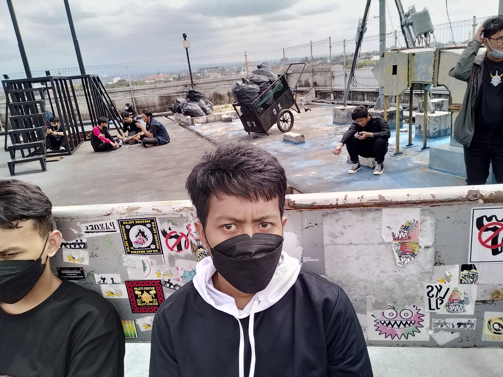

Gypsum merupakan salah satu jenis mineral dengan kandungan kalsium yang tinggi. Mineral ini memiliki berbagai manfaat dalam sektor kehidupan seperti sebagai bahan obat-obatan, produk kecantikan, hingga material bangunan. Dalam industri konstruksi, gypsum rumah seringkali dimanfaatkan sebagai material konstruksi pembentuk dinding, penyekat, partisi, dan plafon.
Gypsum pada umumnya memiliki kelompok yang terdiri dari gypsum batuan, gypsum alabaster, satin spar, dan selenit. Gypsum terbentuk dalam kondisi berbagai kemurnian dan ketebalan yang bervariasi. Gypsum merupakan garam yang pertama kali mengendap akibat proses evaporasi air laut diikuti oleh anhidrit dan halit, ketika salinitas makin bertambah. Sebagai mineral evaporit, endapan gypsum berbentuk lapisan di antara batuan-batuan sedimen batu gamping, serpih merah, batu pasir, lempung, dan garam batu, serta sering pula berbentuk endapan lensa-lensa dalam satuan-satuan batuan sedimen


Email : 20330043@student.janabadra.ac.id
Email : 20330007@student.janabadra.ac.id

Email : 20330014@student.janabadra.ac.id
Bahan :
0.75kg Gypsum Casting
1.5m rofing (Serat Kaca)
1sdm Semen Putih
Bahan :
1.5kg Gypsum Casting
2m rofing (Serat Kaca)
0.5sdm Semen Putih
Bahan :
2.5kg Gypsum Casting
3m rofing (Serat Kaca)
1sdm Semen Putih
Untuk melakukan perhitungan silahkan Login terlebih dahulu.